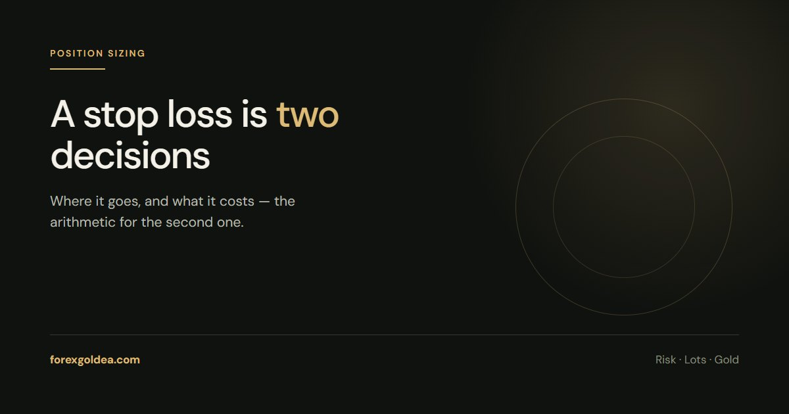

XAUUSD Stop Loss Calculator: Turn Risk Into Lots

A stop loss is two decisions, not one: where it goes, and what it costs. This page is about the second. Give it a balance, a risk percentage and a stop distance, and the arithmetic hands you a lot size.
The three numbers you need
Every position-size calculation on gold needs the same three inputs, and nothing else:
- Account balance — what you actually have, not what you hope to have.
- Risk per trade — a percentage. One to two per cent is the disciplined norm.
- Stop distance — how far the price travels against you before the trade is closed, in dollars of gold price.
The output is a lot size. Notice what is not an input: your conviction, the setup quality, or how good the last three trades were. Those belong to the decision of whether to take the trade at all, not to how big it is.
The formula
Gold makes this easier than forex, because a standard lot is a round 100 ounces. A $1 move in the gold price is therefore $100 per 1.00 lot, $10 per 0.10 lot and $1 per 0.01 lot.
Lot size = (balance × risk %) ÷ (stop distance in $ × 100)
That is the whole thing. The 100 is the contract size in ounces. If your broker uses a different contract size — some do — swap it in.
Worked: a $500 account, 1% risk
Risk per trade is $500 × 1% = $5. Say the structure you are trading puts a sensible stop $4.00 below entry.
Lot size = 5 ÷ (4.00 × 100) = 0.0125 lots. Brokers trade in steps of 0.01, so you round down to 0.01 lots. Rounding up is how a 1% plan quietly becomes 1.6%.
At 0.01 lots a $4.00 adverse move costs $4 — inside the $5 budget, which is the point.
Worked: a $2,000 account, 1% risk
Risk per trade is $20. Same $4.00 stop: 20 ÷ (4.00 × 100) = 0.05 lots.
Now widen the stop to $8.00 and keep the risk identical: 20 ÷ (8.00 × 100) = 0.025 lots, rounded down to 0.02. A wider stop is not more dangerous — it is simply a smaller position. The danger is widening the stop and keeping the size.
If your stop is written in pips or points
Convert before you size. On this site's convention a pip is a $0.10 move and a point is a $0.01 move, so 1 pip = 10 points.
- A 40-pip stop is a $4.00 move.
- A 400-point stop is the same $4.00 move.
- A 40-point stop is only $0.40 — ten times tighter than the trader who said "40" probably meant.
This is the single most expensive unit mix-up in gold trading, and it is worth checking every time. Our pip and point guide covers the conventions in full.
What changes the answer
- Contract size. 100 ounces is standard but not universal. Check the XAUUSD specification in your platform.
- Spread. Your stop is hit on the bid, so the effective distance is slightly shorter than the chart suggests. On a wide-spread account, budget for it.
- Slippage. Around news the fill can be worse than the stop price. The calculated risk is the intention, not a guarantee.
- Account currency. If your account is not in USD, convert at the current rate.
Reader questions
What is a safe stop loss size for gold?
Safety is in the dollar risk, not the distance. A $4 stop at 0.10 lots risks $40; the same $4 stop at 0.01 lots risks $4. Decide what you are willing to lose first, then let the stop distance determine the lot size.
How do I convert a gold stop loss into dollars?
Multiply the stop distance in price by the ounces you control. A $4.00 stop at 0.05 lots is 4.00 × 5 ounces = $20. One lot is 100 ounces, so 0.05 lots is 5 ounces.
Why does my platform show the stop in points?
MetaTrader counts in points, the last decimal of the quote. On a two-decimal gold feed a point is $0.01, so a 400-point stop is a $4.00 move. The number looks large because the unit is small.
Should the stop distance or the lot size come first?
The stop distance. It is set by the chart - the level that proves the idea wrong. The lot size is then arithmetic. Doing it the other way round means picking a size you like and moving the stop to justify it.
Does a tighter stop mean less risk?
Only if the lot size stays the same, which it usually does not. Traders tighten the stop and raise the size, keeping the dollar risk identical but making the trade far more likely to be stopped out by noise.
Where this leaves you
A stop loss calculation has no opinion in it. Balance, a risk percentage, a stop distance measured from the chart, and the arithmetic hands you a lot size you can live with. Do it in that order and position sizing stops being a judgement call you can talk yourself out of.
Affiliate disclosure: we earn a commission when you open and fund an account through our partner links, at no extra cost to you.